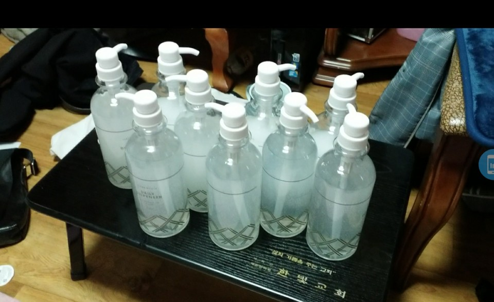
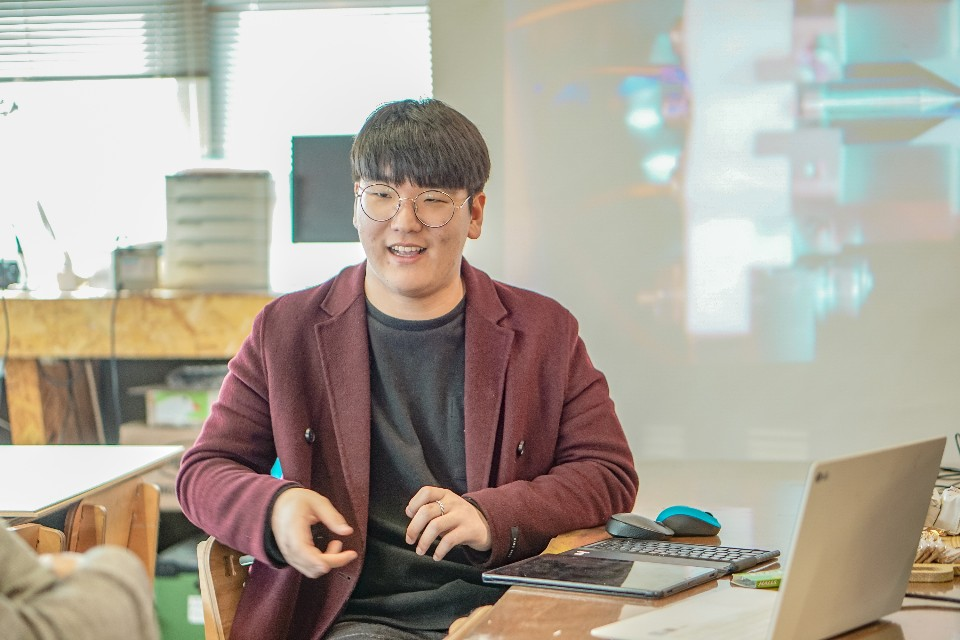
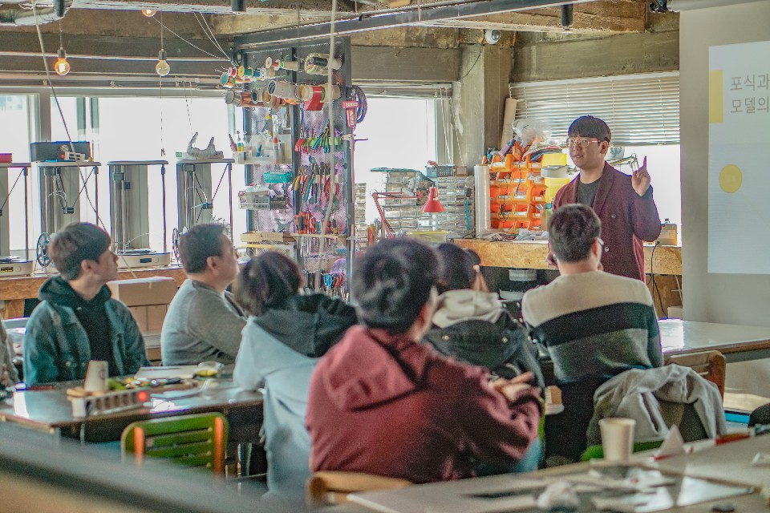

Community Service Activities
-
2020
Making hand sanitizer for underprivileged neighborhoods

-
2019
Biology education through Biostudy Seoul


-
2019
Mathematics & language education at GyanJeo Disabled Protection Center
-Lectured about mathematics and languages for people with physical disabilities.
-
2017-2018
Science teaching at Yeong Myeong Nursery School
-
2018
Translation of ADRF children introduction cards
-
2017-2018
Cleaning, dish washing, and meal preparation at the Dail community
{kind=link}

-Produced and distributed hand sanitizer for neighbors suffering from COVID-19
-Delivered hand sanitizer to my school, and contacted the local welfare center to deliver it to the elderly living alone and the vulnerable.
{kind=link}
{kind=link}
-Lectured about mathematical biology in Seoul BioLab as a founding member of Biostudy
-Gave science education for young children at Youngmyung Nursery School.
-Translated introduction cards for child sponsorship via the Africa Asia Destitute Relief Foundation (ADRF).
-Helped with meal assistance, dishwashing, cleaning, etc. at Dail community, which provides free meals for the elderly living alone.